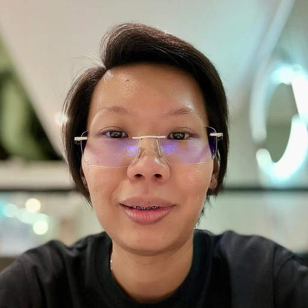

Chng Xiu Wen
Operations & Product Delivery
I work inside the operation.
I turn frontline problems into systems you can rely on.
4 APP-STORE LISTINGS · 2 INTERNAL PLATFORMS · 20 CENTRES SUPPORTED
Tuition Centre Manager, AGrader Learning Centre · Singapore
xiuwen-web.github.io